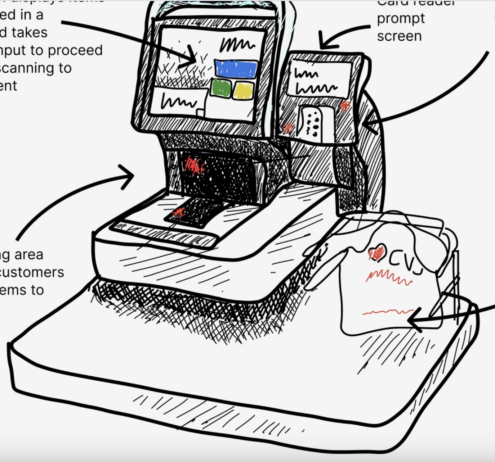
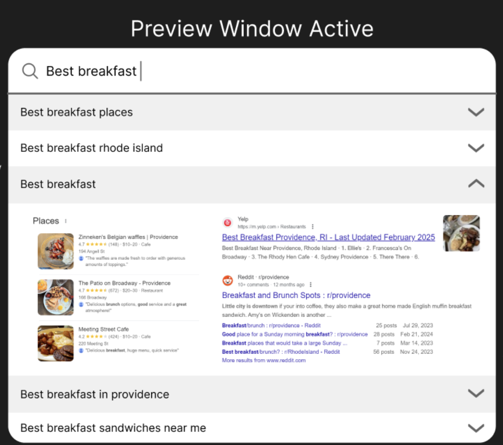
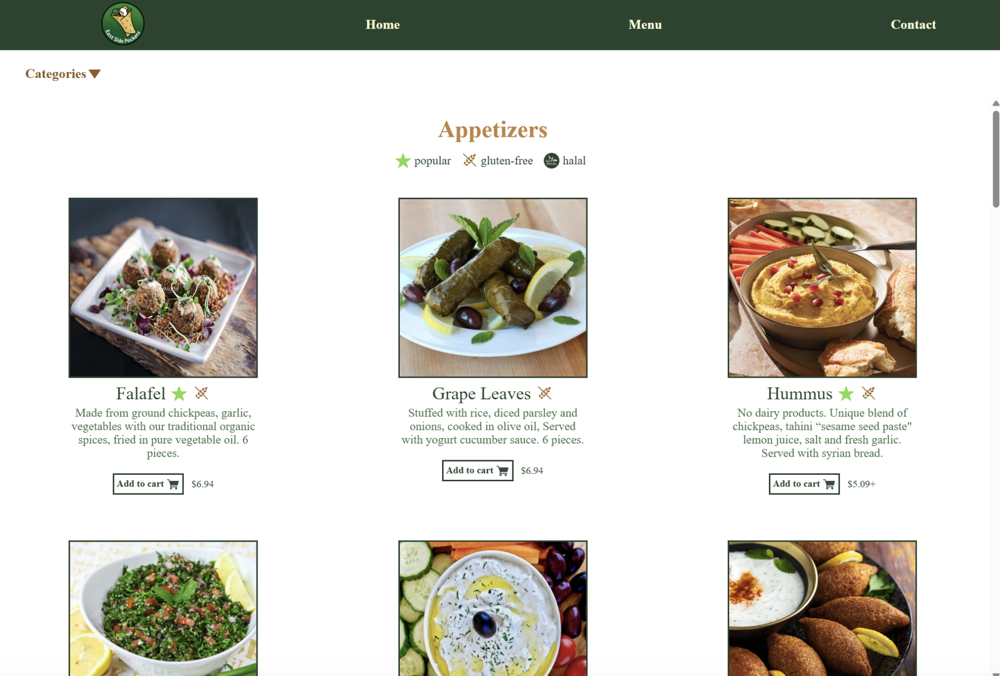
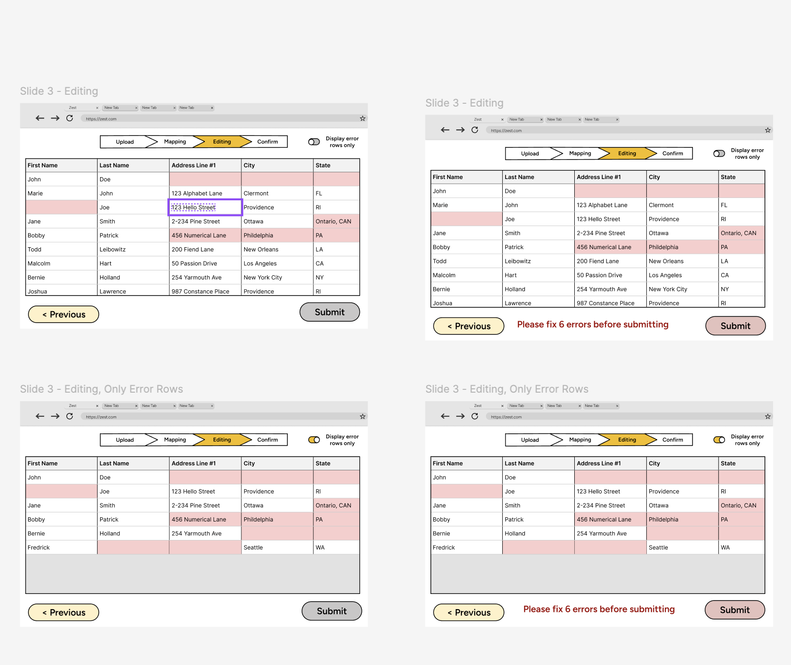

Software
should
make
us
better

Hi, I'm
Nathan Robbins
, a student developer living in Providence, RI.
I
that
empower
users with
.

Used observational analysis and constructed personas to assess usability. (Click for more.)

Designed a search component to maximize intuitiveness and accommodate keyboard users. (Click for more.)

Redesigned local business's webpage to improve usability and accessibility. (Click for more.)

Worked with a team to design a user‑friendly interface for the CSV‑import feature. (Click for more.)